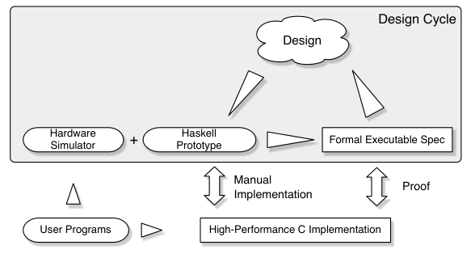
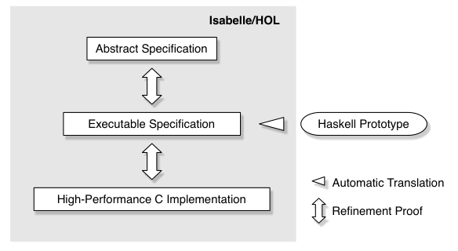
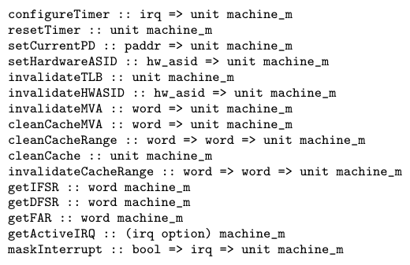
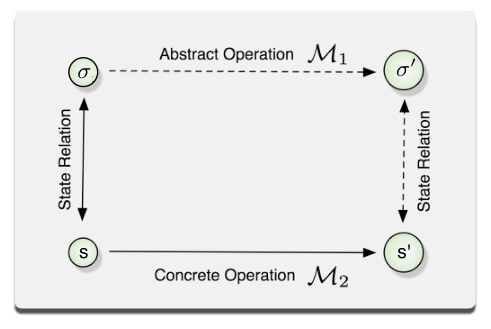
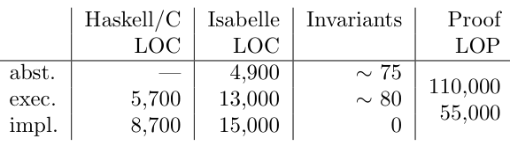

seL4: Formal Verification of an OS Kernel
This page was written by an AI model to give a high-level overview of the paper. Please check the paper for detail.
The kernel is the most privileged code in a computer system, with unlimited hardware access, so any bug in it can undermine every guarantee the rest of the system relies on. The standard defense is to shrink the amount of privileged code: microkernels, separation kernels, small hypervisors and MILS-style designs all reduce the trusted computing base so there is less code in which bugs can hide. But a smaller code base is not a correct one, and the general assumption in software engineering is that any sizeable code base still contains bugs.
Earlier attempts to verify kernels fell short of the actual implementation. 1970s projects such as UCLA Secure Unix and the Provably Secure Operating System (PSOS) worked with primitive theorem-proving tools and never completed implementation-level proofs; later formal models of Mach and of EROS, and high-level analyses of SELinux's FLASK architecture, stopped at the design level; the VFiasco and Robin projects built precise formal semantics for C++ but did not verify substantial parts of a real kernel. Kernels written in type-safe languages such as SPIN and Singularity get a weaker property: type safety only turns a crash into a controlled exception, and their language runtimes, which must still be trusted, are themselves bigger than the whole of seL4.
seL4's contribution is full functional correctness: a machine-checked proof, in the Isabelle/HOL theorem prover, that the kernel's C implementation always behaves exactly as a complete, abstract, operational specification says it does, for every possible user program, interrupt and interleaving. This is far stronger than showing isolated properties like absence of buffer overflows; it predicts the kernel's exact behavior in every situation, and implies standard safety guarantees (no crash, no unsafe memory access, every system call terminates) as corollaries rather than as separately targeted goals.
The proof is built across three specification layers connected by two refinement proofs. An abstract specification describes what the kernel does, in high-level mathematical terms, leaving implementation choices such as the scheduling policy deliberately non-deterministic. An executable specification, generated from a Haskell prototype of the kernel, fixes those choices and the data structures while remaining free of C-level detail. The C implementation is given a precise, foundational formal semantics and shown, line by line, to correspond to the executable specification. Refinement is transitive, so showing the C implementation refines the executable specification and the executable specification refines the abstract specification together prove the C kernel refines the abstract specification directly. Kernel design choices, most notably pushing memory allocation policy out of the kernel and using an event-based, mostly non-preemptible execution model, were made specifically to keep this proof tractable without giving up performance.
seL4 is 8,700 lines of C and 600 lines of assembler, verified for an ARMv6 platform (a 532 MHz ARM1136JF-S on a Freescale i.MX31 board), with over 150 proved invariants and about 200,000 lines of Isabelle/HOL proof script in total. Its optimized one-way IPC path takes 224 in-kernel cycles, close to the 206 cycles of a hand-tuned assembly path in OKL4 2.1 on the same hardware. The whole project, kernel plus proof, cost about 20 person-years, which the authors estimate could drop to about 8 person-years for a repeat effort using the same methodology, roughly twice the cost of building a comparable kernel with no verification at all.

Key takeaways
- seL4 is the first general-purpose OS kernel with a complete, machine-checked proof that its C implementation refines a full abstract specification of its behavior, not just isolated safety properties.
- The proof chain runs abstract specification → executable specification (generated from a Haskell prototype) → C implementation, connected by two refinement proofs in Isabelle/HOL and composed by transitivity.
- Kernel design choices made explicitly for verification, pushing memory allocation to userland, an event-based execution model with few interrupt points, avoiding kernel-level exceptions, kept proof complexity down without hurting performance.
- The remaining assumptions are limited to compiler correctness, a small set of assembly/hardware machine-interface functions, and (currently) the boot/initialization code; everything else, including all possible user inputs and interleavings, is covered by the proof.
- Verified seL4 matches hand-optimized L4 kernels on IPC performance (224 vs 206 cycles), and the total verification cost (about 20 person-years) is far below ad hoc Common Criteria EAL6 certification cost estimates for comparable assurance.
From a privileged microkernel to a machine-checked refinement proof
The seL4 programming model, the design choices made to keep proofs tractable, the three specification layers, and the proof technique that connects them.
1 · The seL4 programming model
seL4 is a third-generation, L4-family microkernel influenced by EROS. It provides virtual address spaces with no kernel-imposed structure (page faults are forwarded via IPC to user-level pager threads), threads, inter-process communication over synchronous and asynchronous endpoints, and capabilities for authorization, unlike most other L4 kernels. Device drivers run entirely at user level, with access to device registers via memory mapping or port access; the kernel itself contains exactly one device driver, a timer that drives the scheduler. Physical memory starts out represented by untyped capabilities, which applications explicitly subdivide and retype into kernel objects (page tables, thread control blocks, CNodes, endpoints, frames), so all kernel memory allocation is explicit and authorized rather than implicit.
2 · Designing for verification: a Haskell detour
OS developers tend to design bottom-up, from hardware details upward; formal methods practitioners tend to design top-down, from simple, provable models downward. seL4's design process reconciles the two with an intermediate target: a restricted, terminating subset of Haskell that both an OS developer and a theorem-proving tool can work with directly.
- The Haskell prototype is linked against a QEMU-derived hardware simulator, so it can run real user-level code, including a subset of the Iguana embedded OS, as if a real kernel were executing in privileged mode.
- The same Haskell source is automatically translated into Isabelle/HOL, becoming the executable specification. This translation step is not correctness-critical, since only the generated Isabelle definitions and, ultimately, the C code need to be trusted.
- The final kernel is manually re-implemented in C rather than generated from Haskell, because the Haskell runtime (bigger than the kernel itself) is hard to verify, relies on garbage collection unsuitable for real-time use, and an automated Haskell-to-C translation would have blocked the micro-optimization that high-performance microkernels need.
3 · The three specification layers

The abstract specification states what the kernel does without saying how: it precisely fixes argument encodings and error reporting (so binary compatibility is guaranteed) but otherwise uses high-level mathematical objects, sets, lists, trees, functions, with explicit machine words and typed pointers only where unavoidable. It uses non-determinism to leave implementation choices open: the scheduler, for example, is specified only as a function that picks any currently runnable thread, or the idle thread, with no policy stated.
The executable specification fills in exactly those choices. Here the scheduler becomes a deterministic, priority-based round-robin search over explicit priority queues, duplicating state (queues alongside thread records) purely for efficiency, which then has to be proved consistent. All data structures become concrete records and lists with straightforward C-like implementations in mind, while still avoiding C-specific detail such as struct layout.
The C implementation is the final, performance-tuned code, given a foundational formal semantics (memory as an untyped function from addresses to bytes, with types, structure layout and casts built on top) so that proof obligations about pointer safety and standard-compliance can be generated and discharged.
4 · Why globals and overloaded data structures make proofs harder
Programming with global state and side effects is unavoidable in a kernel, and the proof technique handles it, but implicit state updates and globals reused for multiple purposes inflate the invariants that must be proved. A scheduler queue implemented as a doubly-linked list needs an invariant stating that back-links are correct everywhere in the kernel, not just in the functions that manipulate the queue directly, since any stray pointer write elsewhere could break it. A hypothetically overloaded page-table structure that simultaneously encoded translation, copy-on-write, zero-on-demand and swap location would require one large, intertwined invariant that every operation touching it must preserve. seL4's design keeps data structures simple and single-purpose specifically to keep these invariants local and small.
5 · Pushing memory management out of the kernel
seL4 exports control of in-kernel memory allocation to applications via its capability model rather than implementing allocation policy inside the kernel. This is primarily motivated by giving applications precise control over memory consumption, but it also directly helps verification: the kernel only has to prove the allocation mechanism is safe, not that any particular user-level policy is sensible.
- New kernel objects must be carved wholly out of a free (untyped) memory region and must not overlap any other allocated object; a capability derivation tree (CDT) tracks which capabilities descend from which, mirroring how memory regions were subdivided.
- Before memory can be reused, every reference to it must be invalidated, either by walking the CDT to find and invalidate all capabilities to the region, or by returning the memory to the free pool only once its last capability is deleted.
- Because object destruction can take unbounded time (for example, deleting a large capability subtree), its progress is stored in the last remaining capability to the object itself, called a zombie capability, so the operation can be safely interrupted and resumed, even by a different thread, without depending on user-accessible registers.
6 · Taming concurrency: an event-based kernel
Proofs about concurrent and non-deterministically interleaved code are much harder than proofs about sequential code. seL4 sidesteps most of this by using an event-based kernel with a single kernel stack, keeping almost the whole API non-preemptible rather than disabling interrupts entirely (which would create unbounded interrupt latency).
- Interrupts are handled by polling at a small number of carefully placed interrupt points, not by temporarily re-enabling interrupts. On a pending interrupt, the kernel explicitly unwinds the call stack back to the kernel/user boundary, records the (possibly modified) event, prefixes the interrupt as a new kernel event, and then re-executes the original operation from scratch.
- This design means no interrupt handler needs an interrupt-point-specific postcondition: the restarted operation simply re-establishes its own preconditions, while still achieving Fluke-style partial preemptability.
- Almost all seL4 operations are short and need no interrupt points at all. The one unbounded operation, object destruction, is made preemptable via the zombie-capability mechanism from Section 5.
7 · Avoiding exceptions, and the C implementation itself
seL4 avoids kernel-level exceptions almost entirely, largely as a side effect of the verification process; the one case needing special care is memory faults. The kernel maps a fixed region of virtual address space to physical memory in every address space, holding all memory the kernel could ever need for its own data structures, so that kernel code itself can never fault. Arguments from user level arrive only in registers or in pre-registered physical frames reachable through this always-mapped kernel region.
The verified C subset is large but deliberately restricted for proof convenience: no address-of operator on local variables (so locals can be assumed disjoint from the heap), no calls through function pointers, no goto, no switch fall-through, no untagged unions, and controlled evaluation order for expressions with side effects. Packed bitfields, needed for things like page-table entry layouts, are generated by a small purpose-built tool that emits both the C code and matching Isabelle/HOL correctness proofs, rather than trusting GCC's bitfield code generation.
8 · The machine interface: where C semantics end

Some operations, such as TLB and cache flushes or reading hardware fault status registers, lie below the semantics of C and must be modeled as an abstract machine interface instead. Each such function is specified with maximal non-determinism, meaning the specification assumes as little as possible about what it does; for example, the fault-status read function getIFSR is assumed only not to alter memory state, since it is essentially one assembly instruction. These functions are implemented in C where possible and otherwise in assembly, and are checked, but not proved, to match the assumptions made about them in the layers above. What this interface leaves assumed, rather than proved, is discussed in the Evaluation tab.
9 · The proof itself: see Evaluation
The forward-simulation technique used to discharge the two refinement theorems, the categories of invariants that dominate the proof effort, and what the resulting guarantees do and do not cover are discussed with their figures and numbers in the Evaluation tab.
Evaluation
What the paper measures: the proof itself as the central result, the code and proof statistics, measured IPC performance against other L4 kernels, and the cost and defect data from carrying out the verification.
Because the central claim is a machine-checked proof rather than a benchmark result, "evaluation" here means stating precisely what was proved and what was assumed, alongside the code, proof, performance and effort numbers the paper reports from building and verifying seL4.
| What | As stated in the paper |
|---|---|
| Platform | Freescale i.MX31 evaluation board, ARM1136JF-S (ARMv6 ISA), 532 MHz, single core |
| Comparison kernel | OKL4 2.1, measured by the authors on the same i.MX31 board |
| External data point | Publicly reported Intel XScale PXA255 (ARMv5) one-way IPC figure |
| Metrics | in-kernel cycles for one-way IPC; lines of code and lines of proof per specification layer; number of invariants proved; person-years of effort; defects found before and during verification |
| Stated scope limits | Uniprocessor only; proof stops at source-code level (compiler, assembly, hardware assumed correct); boot/initialization code (about 1.2 kLOC) excluded from the main theorems |
Two refinement proofs connect the full C implementation to one abstract specification

What it shows. The forward-simulation diagram: to show a concrete state machine M2 refines an abstract one M1, it suffices to exhibit a state relation R such that every transition from a concrete state s to a set of successor states s' corresponds to a transition from a related abstract state σ to a set of abstract successors &sigma', with R holding again between each new concrete state and some new abstract state. Instantiating this framework with the abstract specification (MA), the executable specification (ME) and the C program read into the theorem prover (MC) gives Theorem 1 (ME refines MA) and Theorem 2 (MC refines ME); transitivity of refinement then gives Theorem 3 (MC refines MA).
What to take from it. This single theorem chain implies the kernel never crashes, never executes an unsafe operation, always terminates every system call, never dereferences a null or misaligned pointer, and cannot be subverted by malformed, oversized or maliciously crafted arguments from user level, because the user-visible interface in the abstract specification is binary-compatible with the real kernel. The model of user-level execution is fully non-deterministic, so the proof covers benign, buggy and malicious user programs alike. The scope is bounded: the proof assumes the compiler, the register save/restore and context-switch assembly, and the hardware are correct, and (at time of writing) excludes the kernel's boot/initialization code.
Everything below C, the machine interface, is where trust is explicitly drawn
What it shows. The listed machine-interface functions (timer configuration, TLB and cache invalidation, reading hardware ASIDs and fault-status registers, masking interrupts, and so on) mark the functions implemented in C or assembly that sit below C semantics. Each is specified with maximal non-determinism, assuming as little as possible about hardware behavior that is not modeled in full detail, such as the exact effect of a cache or TLB flush.
What to take from it. Everything above this boundary, system-call argument checking, capability logic, scheduling, IPC, thread and memory-object behavior, carries the full refinement proof down to the C source. Below it, the paper is explicit that cache/TLB-flush correctness is checked only by traditional testing, not proof, and that the implementations of these interface functions are checked (by inspection), not proved, to respect the assumptions made about them in the specification layers.
Code and proof size: the executable specification carries most of the semantic weight

What it shows. Table 1 gives, per layer: the abstract specification is 4,900 lines of Isabelle/HOL with about 75 invariants; the executable specification is 5,700 lines of Haskell, translating into 13,000 lines of Isabelle/HOL, about 80 invariants, and 110,000 lines of proof; the C implementation is 8,700 lines of C (plus 600 lines of assembler not counted here), 15,000 lines of Isabelle/HOL, zero additional invariants, and 55,000 lines of proof. Total proof size including framework and libraries is about 200,000 lines of Isabelle script, with over 150 invariants proved overall.
What to take from it. The first refinement step (abstract to executable) consumed about 8 person-years of the roughly 11 person-years of seL4-specific proof effort, versus under 3 person-years for the second (executable to C), close to a 3:1 split, and about 80% of the first step's effort went into establishing invariants rather than the correspondence proof itself (at most 20%). The C-level refinement framework let the authors avoid proving any new invariants directly on C, consistent with the table's zero invariants for that layer; the low-level, detailed nature of the Haskell executable specification is what shifts most of the proof burden earlier, where reasoning is more convenient than at the C level.
seL4's optimized IPC path is competitive with hand-tuned L4 assembly
What it shows. On the i.MX31/ARM1136JF-S (ARMv6) board, the authors measured 206 in-kernel cycles for a one-way IPC in OKL4 2.1's hand-crafted assembly path, versus 756 cycles for the same kernel's non-optimized C path. seL4's optimized C IPC path measured 224 cycles on the same hardware. As an external reference point, a publicly reported figure for the Intel XScale PXA255 (ARMv5, a different CPU and ISA) is 151 cycles.
What to take from it. An optimized C implementation inside a formally verified kernel lands close to a hand-tuned assembly competitor on the same hardware, despite the restrictions the verified C subset imposes (no function pointers, no address-of on locals, generated bitfield code, and so on). The paper notes this optimized path was not yet inside the verified code base at the time of writing, though it states the path lies within the verifiable fragment of C and is not fundamentally different from already-verified code.
Total verification cost was about 20 person-years, estimated to drop to about 6 for a repeat
What it shows. Reported effort: the abstract specification took about 4 person-months; the Haskell prototype about 2 person-years across the whole project; the executable-specification translator setup took 3 person-months; the initial C translation took 3 weeks, with about 2 person-months total for the C implementation, giving about 2.2 person-years for kernel development overall. Proof cost was about 20 person-years, split into roughly 9 person-years building reusable proof framework, tools and libraries and about 11 person-years of seL4-specific proof. The authors estimate a repeat verification with the same methodology would cost about 6 person-years, for a total (kernel plus proof) of about 8 person-years.
What to take from it. The paper compares this to SLOCCount's estimate of 4 person-years for a conventionally engineered kernel of seL4's size, and to the Karlsruhe team's reported 6 person-years for building the Pistachio kernel from scratch; it argues the Haskell-based design detour was a net cost saver even ignoring verification. Against an industry rule-of-thumb of $10k per line of code for Common Criteria EAL6 certification, which the paper computes would total $87M for a kernel seL4's size, the authors argue their approach gives far stronger assurance for a fraction of that cost.
Verification found 144 defects, mostly shallow, concentrated in the first refinement step
What it shows. Before formal verification was underway in earnest, informal use (internal student projects and an x86 port) had already uncovered 16 implementation defects. The first refinement proof (abstract to executable specification) then produced about 300 changes to the abstract specification and 200 to the executable specification, roughly half fixing algorithmic or design bugs and half made purely for verification convenience. The second refinement proof (executable specification to C) found another 144 defects and led to 54 further code changes; bugs here were typos, misreadings of the specification, or code not updated after a specification change, not deep algorithmic flaws, plus 44 specification changes made to ease the proof and 34 implementation restrictions (such as maximum ASID size) that the authors made explicit in the specification as a result.
What to take from it. Deep, algorithm-level bugs were caught early, in the abstract-to-executable step, because the C code was written against an already-verified, precise, low-level specification; the C-level proof mainly caught simple human slips, some of which had already survived substantial prior testing, suggesting that testing alone misses not only subtle bugs but a surprising number of simple ones too.
FAQ
Q·What does "functional correctness" actually guarantee, beyond "the kernel doesn't crash"?▾
It means the C implementation's behavior, for every possible input, interrupt and interleaving with user code, is always exactly what the abstract specification says it is. That is strong enough to predict the kernel's precise behavior in any situation, and it implies, as consequences rather than separate goals, that the kernel never crashes, never performs an unsafe operation, every system call terminates, and the kernel cannot be subverted by malformed or malicious arguments from user level.
Q·Why is this called the first verification of its kind?▾
Earlier kernel-verification efforts either never reached a real implementation (UCLA Secure Unix finished 20% of its proofs; PSOS never attempted implementation proofs), modeled only an idealized or toy system (KIT, 320 lines of artificial assembly), stopped at a high-level design (formal models of Mach and EROS, high-level SELinux/FLASK analyses), or built precise language semantics without verifying a substantial kernel (VFiasco, Robin). seL4 is the first to carry a complete functional-correctness proof all the way from an abstract specification down to the C source of a general-purpose, deployable kernel.
Q·How is this different from static analysis, model checking, or writing the kernel in a type-safe language?▾
Static analysis and model checkers like SLAM and BLAST can automatically show specific, narrow properties (such as correct device-driver API usage) on finite or restricted state spaces, but cannot establish full functional correctness of a realistic kernel. Type-safe kernels such as SPIN and Singularity get weaker guarantees: type safety only converts a would-be crash into a controlled exception, and the language runtime itself, which must be trusted, is bigger than seL4's entire verified code base.
Q·Why go through a Haskell prototype instead of specifying and verifying straight from C?▾
Haskell gives OS developers a real programming language to design and test the kernel in (including running it against a hardware simulator), while also being automatically translatable into the theorem prover, unlike writing the executable specification directly in Isabelle/HOL, which would have meant a steep learning curve and a far less capable toolchain for the design team. The paper reports this detour was a net cost saver, not just a verification convenience.
Q·What does seL4 actually look like as a kernel?▾
A third-generation L4-family microkernel with virtual address spaces that have no kernel-defined structure (page faults go to user-level pager threads over IPC), threads, synchronous/asynchronous IPC endpoints, and capability-based authorization. Device drivers run at user level; the kernel contains a single device driver, the timer. Physical memory is managed explicitly: applications retype capabilities to untyped memory into kernel objects like page tables, TCBs, CNodes and frames.
Q·What is "refinement," and how is it proved mechanically?▾
Refinement is a correspondence between a high-level (abstract) and a low-level (concrete) description of a system, such that every Hoare-logic property proved about the abstract model also holds for the concrete one. The paper reduces proving refinement to forward simulation: exhibiting a relation between abstract and concrete states that is preserved across every matching transition. Two such proofs (executable-to-abstract, C-to-executable), composed by transitivity, give the main result.
Q·What is left unverified, what do they actually assume?▾
The GCC compiler and its code generation, the ARMv6 hardware, a small set of assembly-implemented machine-interface functions (TLB/cache flushes, register save/restore, context switching), and, at the time of writing, about 1.2 kLOC of boot and initialization code. Cache and TLB flush correctness is checked only by traditional testing, not by proof.
Q·Does verification hurt performance?▾
Not according to the paper's measurements: seL4's optimized one-way IPC path measured 224 cycles on the authors' ARMv6 board, versus 206 cycles for a hand-tuned assembly path in OKL4 2.1 on the same board, putting seL4 in the range of the fastest L4 kernels despite restrictions the verified C subset imposes.
Q·How expensive was this, and could another team repeat it?▾
About 20 person-years total: roughly 9 building reusable proof framework and tooling, and 11 seL4-specific, on top of 2.2 person-years to design and build the kernel itself. The authors estimate a repeat effort using the same methodology, now that the framework exists, would cost about 6 person-years of proof, for roughly 8 person-years total, about twice a conventional from-scratch build with no verification at all.
Q·What kinds of bugs did the verification find?▾
144 defects during the C-level refinement proof, mostly typos, misread specifications, or code not updated after a specification change, since the deeper algorithmic bugs had already been found and fixed earlier, during the abstract-to-executable refinement (which drove about 300 changes to the abstract specification). Even some simple, easily-fixed faults had survived substantial prior testing before the proof caught them.
Q·What happens when the verified kernel changes later; do they redo the whole proof?▾
No, cost scales with how deeply a change cuts across existing invariants, not simply with lines of code changed. Local, behavior-preserving optimizations re-verify quickly and roughly in proportion to their size. Adding an independent new system call took about one day to implement and under one person-week to re-verify. Adding large, cross-cutting features (interrupts, ARM page tables, address spaces) touched about 12% of existing Haskell code, added 37% more, and cost 1.5 to 2 person-years to re-verify, about 32% of prior proof effort. A small but deeply cross-cutting change, adding reply capabilities, broke many capability invariants and cost about 1 person-year, 17% of the original effort, despite touching under 5% of the code.
Q·Does this prove seL4 is secure, as in unhackable?▾
It proves the kernel's C code always behaves according to its abstract specification, which rules out an entire class of vulnerabilities, implementation bugs that diverge from intended behavior, including the kind exploitable via buffer overflows or malformed arguments. It does not by itself prove the access-control policy expressed in that specification is secure; the authors separately modeled and proved properties of seL4's access-control system in Isabelle/HOL, but state that work had not yet been connected to the functional-correctness proof described in this paper.
Q·Why doesn't the proof cover multiple processors or the boot code?▾
The paper scopes its uniprocessor focus as a deliberate choice to keep the degree of interleaving and non-determinism manageable with their current techniques, and lists multiprocessor verification as future work alongside verifying the assembly-level parts of the kernel and application-level verification built on top of seL4's now-proven specification. Boot/initialization code (about 1.2 kLOC) was verified in an earlier design version but is excluded from the main theorems as stated in this paper.